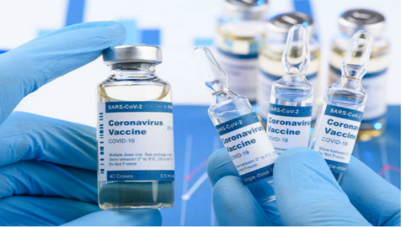

The virus that causes COVID-19 is in a family of viruses called Coronaviridae. Antibiotics do not work against viruses. Some people who become ill with COVID-19 can also develop a bacterial infection as a complication.
In this case, antibiotics may be recommended by a health care provider.
Yes. There are three COVID-19 vaccines for which certain national regulatory authorities have authorized the use. None have yet received WHO EUL/PQ authorization but we expect an assessment on the Pfizer vaccine by the end of December and for some other candidates soon thereafter.
Large studies of 5 vaccine candidates efficacy and safety results, including these three (and for Moderna and AstraZeneca), have been publicly reported through press releases but only one (AstraZeneca) has published results in the peer reviewed literature. We expect more such reports in the near future. It is likely that additional candidates will be submitted to regulatory authorities for approval. There aremany potential COVID-19 vaccine candidates currently in development.
Once vaccines are demonstrated to be safe and efficacious, they must be approved by national regulators, manufactured to exacting standards, and distributed. WHO is working with partners around the world to help coordinate key steps in this process, including to facilitate equitable access to safe and effective COVID-19 vaccines for the billions of people who will need them.
The first COVID-19 vaccines are beginning to be introduced in countries. Before COVID-19 vaccines can be delivered:
It is too early to know if COVID-19 vaccines will provide long-term protection. Additional research is needed to answer this question. However, it is encouraging that available data suggest that most people who recover from COVID-19 develop an immune response that provides at least some period of protection against reinfection although we are still learning how strong this protection is, and how long it lasts.
Most COVID-19 vaccines being tested or reviewed now are using two dose regimens.
The national drug regulator on Sunday gave emergency restricted approval fortwo vaccine candidates,Covaxin, developed by Bharat Biotech, and Covishield, a version of the Oxford-AstraZeneca vaccine that is being manufactured under licence by Serum Institute of India. As the country took the final step to begin vaccinating priority groups against the novelcoronavirus, AIIMS Director Dr Randeep Guleria, who has been at the forefront of the government management of the Covid-19 pandemic, released a video on the vaccination.
Priority groups such as healthcare workers, frontline workers are first on the list, followed by people over the age of 50 years and the persons under 50 years with co-morbid conditions. The eligible beneficiaries will be informed through the registered mobile numbers regarding the health facility where the vaccine will be provided, and the health schedule.
The vaccine will be voluntarily. However, it is advisable to complete the vaccine schedule in order to protect ourselves, our near and dear ones, our close contacts, family members, and co-workers.